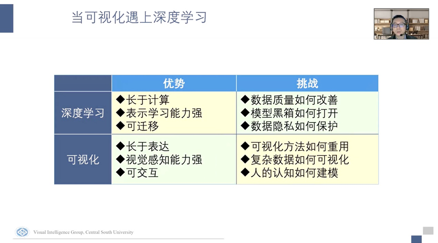
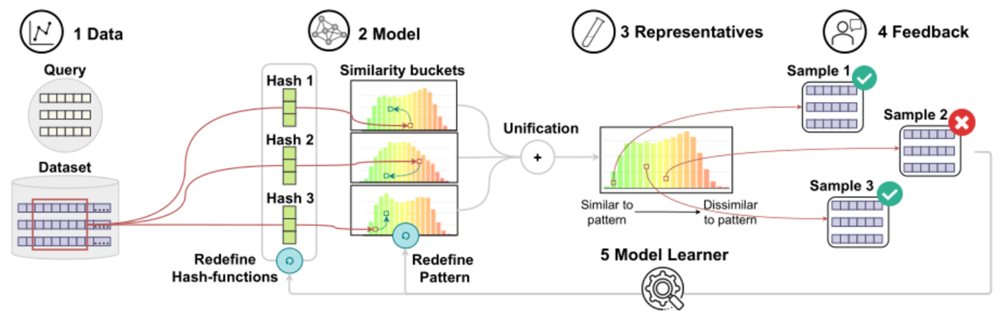
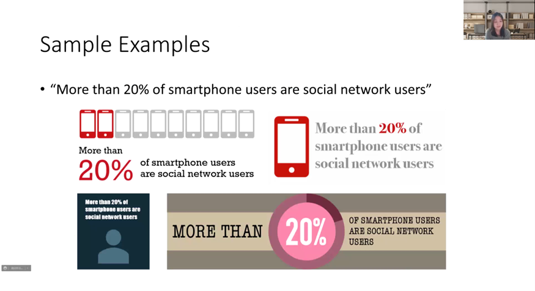
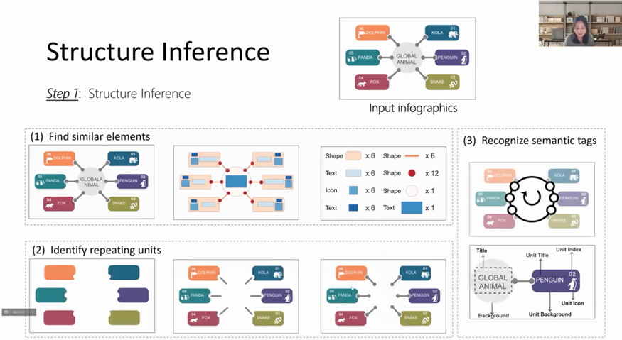
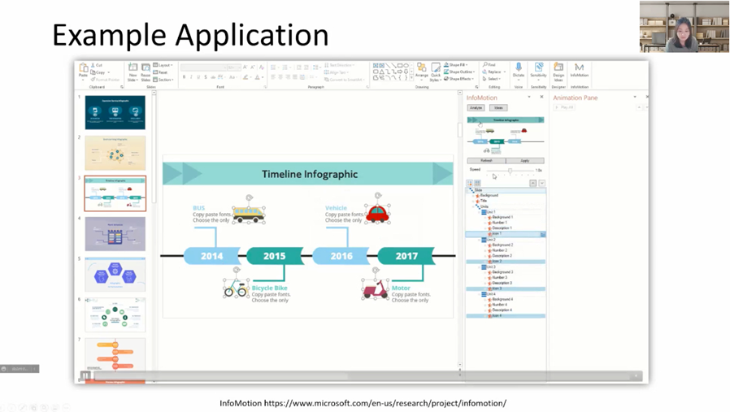

报告嘉宾：王韵博士 日期：2022年5月6日 作者：侯伊涵 审核：邵灵丹
2022年5月6日星期五下午，HKUST-CIVAL课题组邀请了微软亚洲研究院主管研究员王韵做特邀报告。王韵博士在香港科技大学获得计算机科学博士学位。在此之前，她曾获复旦大学软件学院的学士学位，担任复旦大学大数据学院行业导师。她的主要研究领域是人机交互、数据可视化、数据智能、和人工智能，以增强人与数据的交互与交流为目标。她的研究成果被发表在IEEE TVCG、IEEE VIS、ACM CHI、EuroVis等顶级学术期刊和会议上，并且担任IEEE TVCG，ACM CHI, IEEE VIS等顶级期刊与会议的审稿人。
王韵博士带来了题为《可视化数据叙事的自动设计》的精彩报告。首先，讲者介绍了数据分析的流程与目标（如图1），以及使用现有工具的局限性。一般情况下，数据分析师拿到数据后首先通过探索产生基础的理解，并在此之上对数据进行建模与分析，最终汇总结果，将其转化为数据故事。而数据分析流程大体可以分为两部分,一部分是数据分析（Data Analysis），一部分就是数据叙事（Data Storytelling）。数据分析的重点在于发现数据中的insight，而数据叙事的重点在于传递信息。虽然有很多已有的工具存在，例如用于数据分析的Excel、用于平面设计的Photoshop等。但是由于它们都是比较专业化的工具，有较高学习成本，以及考虑到在不同的工具之间切换非常繁琐。因此，讲者希望通过自动化方法取代原本的人工步骤，帮助用户进行数据的探索与表达。下面介绍讲者围绕着数据探索和数据叙事展开的四个工作。

为了解决数据探索上的困难，王韵博士所在的研究团队提出了DataShot，一个从表格数据中创建情况简报（fact sheet）的自动化系统。流程分为三步：第一步，对数据进行理解和挖掘，找到有趣的insight。数据表被抽象成五元组，参数包括描述主体、量化的代表有趣程度的分数等。第二步，对这些故事点进行筛选和组织。 通过筛选较高的分数，数据表被转化成故事点，并按照描述主体分组。通过对各组进行新一轮的有趣程度评分，系统将拥有高分数的组推荐给用户。第三步，将数据中的故事点转换为可视化表达，包括以下几点：1）通过训练决策树，得到最常用的数据和可视化表达的对应，找到合适的可视化设计；2）从文本例子中抽取出格式模板，将提取的数据填入；3）将文本和图片进行布局；4）选择语义相关的颜色。最后，将它们组合成完整的情况简报（如图2）。

注：情况简报是指包含有关产品，物质，服务或其他主题的基本信息的单页文档
除了从数据探索的角度，讲者还希望能更深入地理解人们想要表达的数据是什么样子的，因此开展了将包含数据描述的文本转化成视觉表达的工作。首先，对文本进行语义分析。通过CNN和CRF的模型，一些关键信息例如数字、描述主体，被很好分割开。为了使研究范围可控，文字样本集中于对百分数的描述。具体而言，视觉设计分为四部分：布局，描述，图标以及配色。通过对四部分的设计方案排列组合，并对结果进行评分，将好的设计推荐给用户。其中，布局指的是手工设定模板，对数字、图形以及描述的位置进行设置；描述主要是设置不同文字片段相互的位置；在图标方面，通过带语义的图标库，把研究主体映射为语义相关的图标，把数字映射为例如环形图的可视化图表；对于颜色方面，则是选择与语义相符合的颜色。最后我们就会把这四个维度进行一个组合，然后对组合好的信息图去进行一个打分。信息图的量化分数分为三部分。其一，通过Word2vec分数，评估被挑选出的图标、颜色与描述主体在语义上是否相近。其二，从信息量角度评估信息是否有被很好传达。其三，通过整个画面的利用率，评估整体布局是否饱满。通过这三部分的总体评分与排序，生成合适的可视化例子（如图3）。在这个项目中，虽然自动生成的可视化已经接近没有受过特别训练的人类用户的水平，但相较于专业的设计师还有所不足。因此研究者思考：是否可以利用设计师的作品，从中抽象出模板，并对他们的设计进行复用？

为了解决上述提到的这个问题，王韵博士和她的团队又提出一项工作：通过识别设计师的作品图片，将其中的设计元素提取为模板，填入用户输入的内容生成新的可视化设计。因为在网络上关于时间线有大量的美观的设计，并且这也是常见的场景，因此这项工作围绕时间线这一设计主题展开。为了理解艺术家做的设计，讲者和其团队对于时间线进行了建模，将它分为了线、事件节点、相关图标以及文本等几部分。其中，整体的布局、配色以及事件节点的图形可以被重用，因为他们不含过多的语义信息。与之相反，图标、文字描述等通常带有强烈语义，不能被重用。该模型参考了真实世界用于对象检测和分割的Mask R-CNN模型，并进行了修改。通过收集数据训练模型，一些复杂的设计中的各个视觉元素也可以被检测出（如图4）。

在上一个工作的基础上，讲者进一步思考：除了重用设计师的作品以外，是否能进一步增强设计，使它更富有吸引力、令人印象深刻。由于使用现有的动画创作工具，包括AE，D3这样的专业工具都有较高门槛；PowerPoint虽然学习成本相对较低，但用户需要去设置大量的动画效果与动画时间线，是非常耗时并且容易出错的过程。因此一个名为InfoMotion的工具被提出，用于为静态图添加动画效果。首先需要理解用户，对他们输入的静态图进行建模（如图5）。图像可以被分为标题、主体、脚注、一些重复的视觉元素，以及语义相关的图标和描述。布局也包含多种，例如直线型、S型、环形等等。讲者通过一种巧妙的方式，通过分析相似视觉元素的数量，推断出图像描述的是几个重复的实体。由此，实体的顺序以及布局也可以被很简单获得。通过以上信息，可以为重复的元素添加动画效果。对于出现顺序，可以分为按照重复实体的顺序，也可以按照同一类视觉元素的顺序。对于出现节奏，有同时出现的设计，也有逐一出现的设计。最终，用户可以通过讲者他们做的PowerPoint插件查看信息图的结构，并对结构化的多个元素统一设定动画效果（如图6）。


报告接近尾声，在提问环节，王韵博士和CIVAL课题组进行了热烈的讨论。针对文本中关键信息的识别与切割，王韵博士提到，复杂文本的识别是比较困难的。在他们的项目中，多个数字和描述主体的对应是采用启发式方法，即通过两者之间的距离进行判断。针对是否应该在设计过程中引入更多人的参与，王韵博士提到对于复杂的、比较高级的任务，确实需要用户更多地协同。如果只是机器作为可视化设计的输出方，人作为被动的接收方，在处理复杂任务的时候自动化得到的通常结果不尽人意，而用户却无法改变它。如何让人更好参与这个过程，并发挥自己擅长的部分，例如用语言形式表达，是一个正在被探索的方向。关于Storytelling的前景，王韵博士表示目前学术界没有非常多的研究，这对于刚开始读博的同学来说是一件好事。她还强调，对于研究没有太多相关工作的方向，理解现在的用户是怎么去完成任务是很重要的。首先需要发现用户在某个领域会遇到很大的问题，才会想到去如何解决问题。解决方案并不需要非常高级，发现问题本身也是填补学术界空白的一个过程。她建议，对于非计算机背景的同学，尽量利用自己的优势。可以展开一些用户实验和访谈，了解用户的需求，或者用简单的方法也可以解决很大的痛点，不需要一直追求复杂或高级的方法。除此之外王韵博士还提到，人机交互和可视化领域其实对模型的准确度并不是很敏感，即便准确度提高了几个点，用户可能并没有感受到，因此整体提高用户体验是更重要的。对于如何评估设计的美观程度，王韵博士表示这是比较困难的。美是很主观的感受，拥有很多标准，很难收集到好的数据，因此目前也没有很好的办法去衡量。